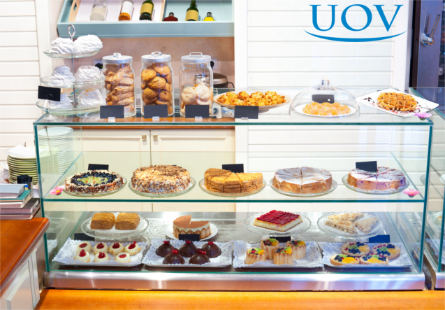

Sobre a Confeitaria Doce&Sabor
Visão:A Doce&Sabor pretende estar entre as melhores, mais lembradas e respeitadas empresas de seu segmento.

Nossa missão é:Produzir, fornecer e distribuir doces com elevado padrão de qualidade, prezando pela experiência no atendimento e respeito pelos seus clientes, crescimento e Desenvolvimento Pleno na área alimentícia, mantendo a qualidade, sabor e tradição dos verdadeiros Doces caseiros.
Valores:Busca constante da melhoria e qualidade de seus produtos, na logística e no atendimento ás necessidades de seus clientes,comprometimento ético e valorização dos colaboradores, distribuidores e fornecedores. ética, empreendedorismo, transparência, responsabilidade social e ambiental, credibilidade nos serviços e total higiene com os produtos fabricados.
Diferencial:A confeitaria vem a ser a combinação perfeita de criatividade, sabor e inovação. Seus produtos abusam não só paladar e olfato, também visão, um bom trabalho de confeitaria, é importante uma seleção adequada e o treinamento dos profissionais escolhidos.